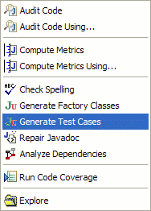

CodePro can generate tests for the JavaServer Faces Framework ( java.sun.com/javaee/javaserverfaces). JSF is a framework for building user interfaces for web applications. CodePro supports generating tests for JSF 1.1 and JSF 1.2.
Let’s start out with a simple Hello World example of a JSF backing bean:
public class PersonBean {
String personName;
public String getPersonName() {
return personName;
}
public void setPersonName(String name) {
personName = name;
}
public int getPersonCount() {
Map sessionMap = FacesContext.getCurrentInstance().getExternalContext().getSessionMap();
Integer personCount = (Integer) sessionMap.get("personCount");
return personCount != null ? personCount.intValue() : 0;
}
}
In order to generate tests for this controller, right click on the class in the Package Explorer and choose
CodePro Tools > Generate Test Cases. This will create and open a new test case called
PersonBeanTest.

public class PersonBeanTest extends AbstractJsfTestCase {
public PersonBeanTest(String name) {
super(name);
}
public void testGetPersonCount_1()
throws Exception {
PersonBean fixture = new PersonBean();
fixture.setPersonName("");
int result = fixture.getPersonCount();
// add additional test code here
assertEquals(0, result);
}
public void testGetPersonCount_2()
throws Exception {
PersonBean fixture = new PersonBean();
fixture.setPersonName("");
int result = fixture.getPersonCount();
// add additional test code here
assertEquals(0, result);
}
public void testGetPersonName_1()
throws Exception {
PersonBean fixture = new PersonBean();
fixture.setPersonName("");
String result = fixture.getPersonName();
// add additional test code here
assertNotNull(result);
}
public void testSetPersonName_1()
throws Exception {
PersonBean fixture = new PersonBean();
fixture.setPersonName("");
String name = "";
fixture.setPersonName(name);
// add additional test code here
}
}
You can see that, like CodePro’s normal test generation, we create a fixture of the class under test, execute the method under test, and make assertions on the results. For JSF tests we use Shale’s
AbstractJsfTestCase class as the superclass of our test case. This class initializes certain JSF variables, like the
FacesContext, so that our JUnit tests can refer to these variables. For instance in the
PersonBean.getPersonCount() method, we get information out of the
FacesContext's session map. We would not have been able to do this without the FacesContext already having been set up by the
AbstractJsfTestCase class.
CodePro’s generated JSF unit tests are client based tests. The test code runs locally on the client and not in a servlet container. This means that there is no real JSF framework running. Your backing beans from the
faces-config.xml file have not been initialized, no servlet listeners from the
web.xml file have been started, and your datasources defined in xml files are not active. The
FacesContext implementation that exists in the context of CodePro’s generated unit tests is good for unit testing; for testing smaller pieces of the application’s functionality in isolation. For in-container integration style tests, a tool like
Cactus should be investigated.
There are a few ways to improve the quality of the generated tests. One way is to turn on mock object support. You can do this through the CodePro > JUnit > Mock Objects preference page. Testing with mock objects helps you reduce the dependencies between the code you’re testing and other parts of your application. If you can isolate and test different parts of your application separately, you’ll have more reliable and targeted tests.
Another way to improve the quality of your tests is to use dependency injection in your source code. Dependency injection, or inversion of control, is a way of suppling an object’s dependencies indirectly. Instead of an object knowing how to get a reference to a service, a dependency injection framework supplies that service to the object; i.e. it injects the dependency into the object. This allows services to be mocked much easier, and facilitates testing. Spring, Juice, and PicoContainer are all examples of dependency injection frameworks.
A third way to improve the generated tests is to modify them slightly after generation to supply more information to the test fixture. In the
testGetPersonCount_1() test method above, the test fixture accesses the session variable
personCount. It could be that in order to test this method in a meaningful way, this session variable should be set to a value before the method is executed. The new, user-modified test might look like:
public void testGetPersonCount_1()
throws Exception
{
PersonBean fixture = new PersonBean();
fixture.setPersonName("");
// user added code
Map sessionMap = FacesContext.getCurrentInstance().getExternalContext().getSessionMap();
sessionMap.set("personCount", new Integer(5));
int result = fixture.getPersonCount();
// add additional test code here
assertEquals(5, result);
}
Note that if you edit a generated test method, you need to remove the @generatedBy tag in the comments to prevent CodePro from writing over your modifications the next time it generates tests for that class.
CodePro uses two different methods to determine if a class is a JSF class.
If the class makes an explicit reference to the
FacesContext class, then it is assumed to be a JSF class. Otherwise, unit tests for that class would not have access to an initialized
FacesContext instance.
The second way of identifying a JSF class is to use the faces-config.xml file. If a faces-config.xml file exists in the project, and the class is referenced from there as a managed-bean / backing bean, then the class is assumed to be a JSF class.
Shale is a web application framework based on JSF. CodePro uses the Shale test library to initialize JSF variables, including the
FacesContext. For more information about Shale and the Shale test library, see
shale.apache.org/shale-test.